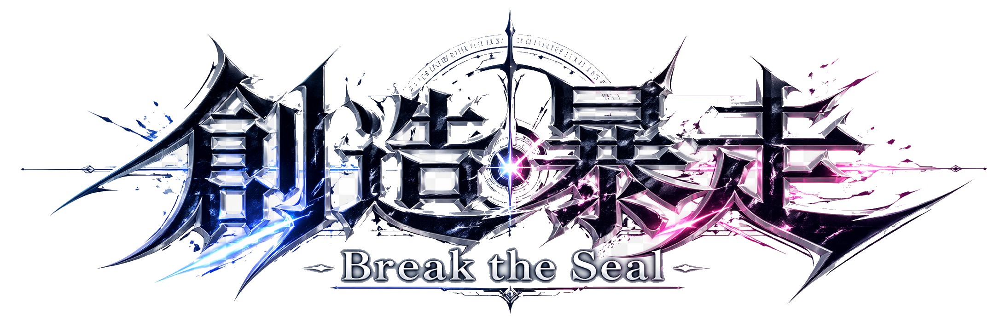
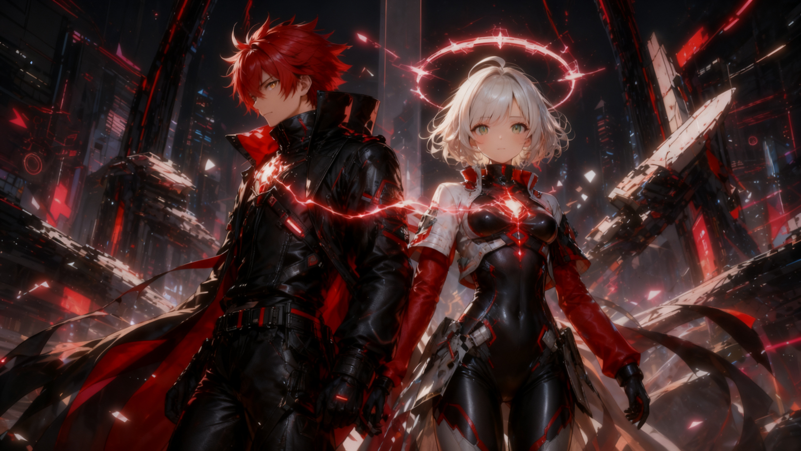
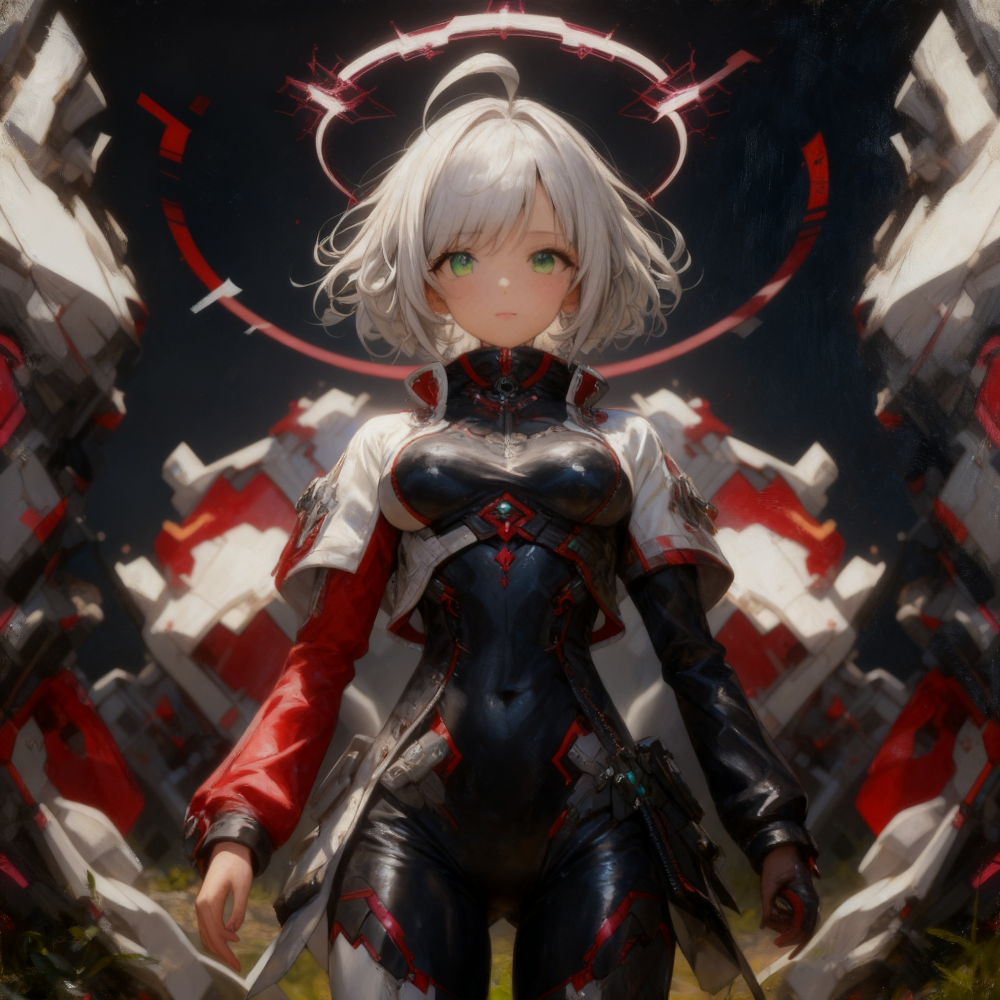
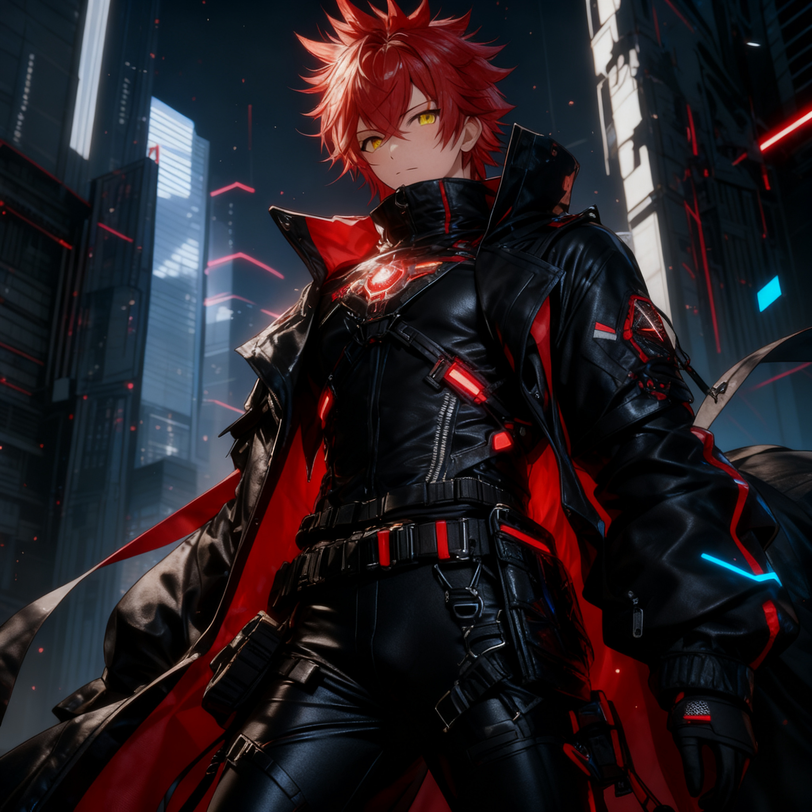
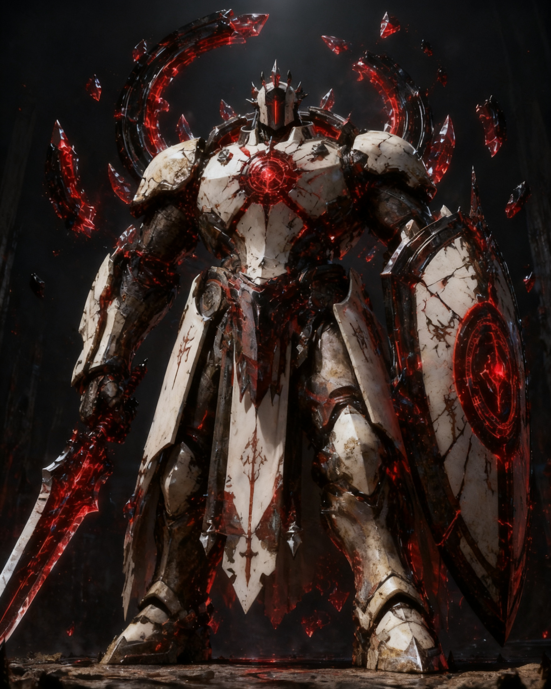
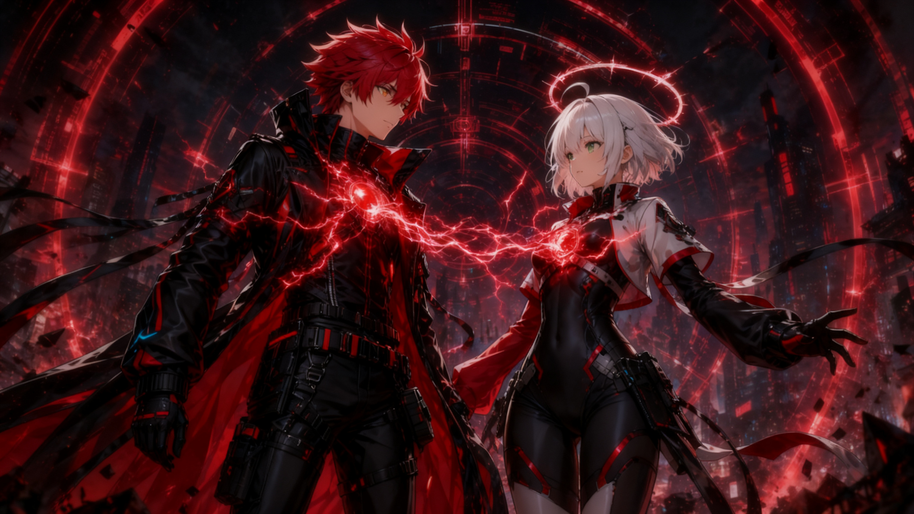
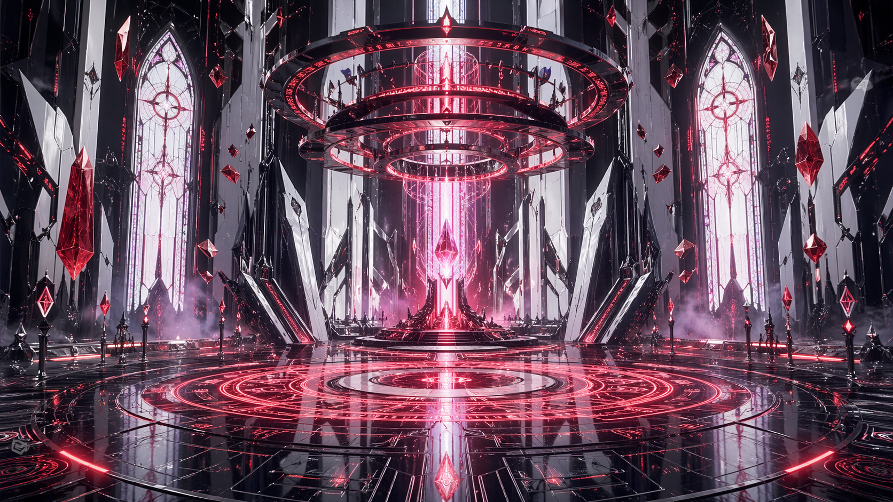
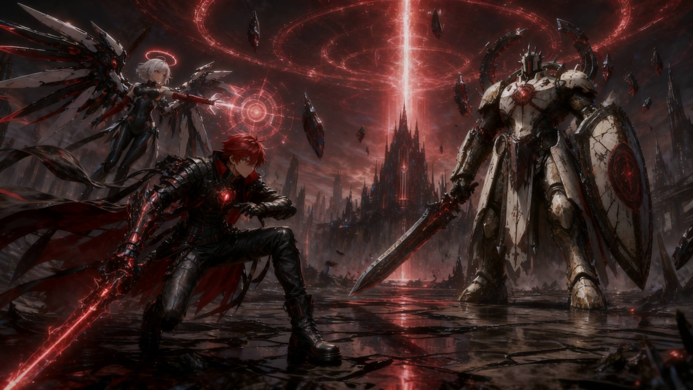
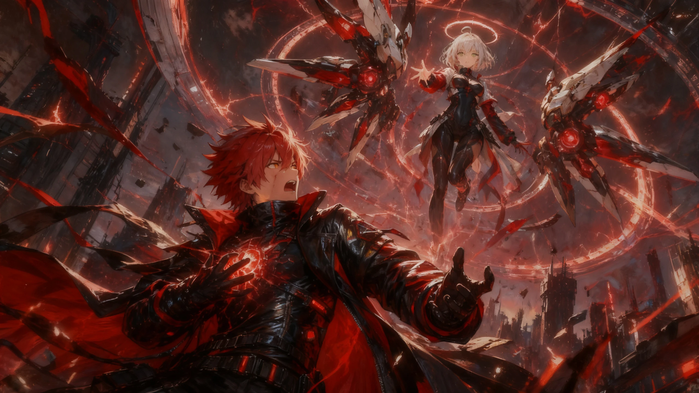
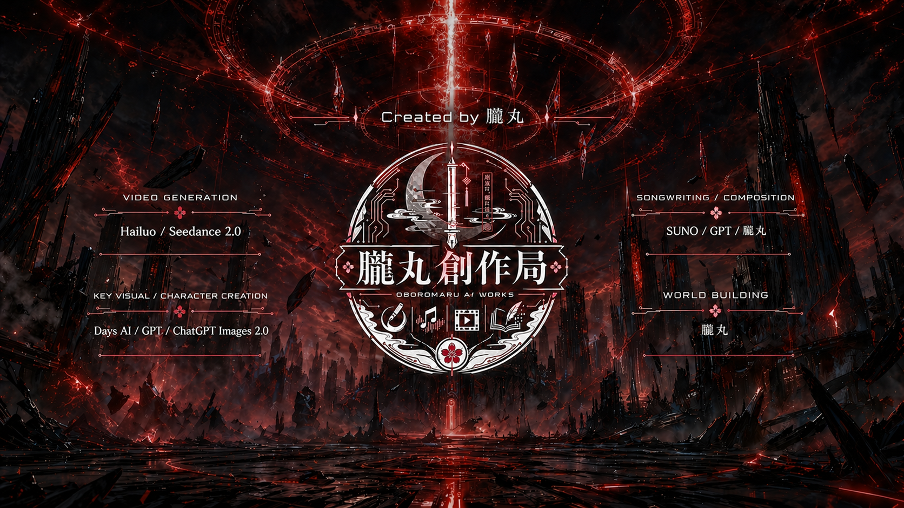

Official Fictional Anime Project
「創造暴走 -Break the Seal-」は、近未来ディストピアを舞台に、創造コアを宿した少年カイトと、 封印システムから目覚めた女性OS人格ルルを描く架空のオリジナルアニメ企画です。
本サイトは架空アニメ作品『創造暴走 -Break the Seal-』の演出・世界観表現を目的とした
フィクション企画ページです。
掲載されているキャラクター、設定、組織、出来事、ビジュアル表現は創作上のものであり、実在の作品・団体・告知ではありません。
This website is a fictional project page for the original concept anime “Break the Seal.” All characters, settings, organizations, events, and visual materials shown here are part of a fictional creative project and do not represent a real anime production, company, or official announcement.
Official Fictional Anime Project

創造暴走 -Break the Seal-朧丸創作局 / OBOROMARU AI WORKS
創造は、封印を破って
現実へ流れ込む。
封印された創造衝動が、現実を書き換える。創造コアを宿した少年カイトと、 封印システムから目覚めた女性OS人格ルルが“正しい現実”に抗う tech-gothic anime project.

01 / Concept
Official Fictional Anime Project
「創造暴走 -Break the Seal-」は、近未来ディストピアを舞台に、創造コアを宿した少年カイトと、 封印システムから目覚めた女性OS人格ルルを描く架空のオリジナルアニメ企画です。
Creative Core
管理された世界が与える“正しい現実”に抗いながら、カイトとルルは封印された創造衝動が 現実層を書き換えていく真実へ近づいていく。
02 / Story
System Log // Creative Core Awakening
近未来都市では、創造力は危険因子として管理されていた。 人々には“正しい現実”だけが与えられ、未完成の物語や過剰な想像は、封印区画の奥深くへ隔離されていた。
ある夜、少年カイトの胸に眠る創造コアが起動する。 都市の空に赤い封印リングが展開し、書きかけの物語、消えた歌、未完成の映像が現実へ流れ込みはじめる。
混乱の中で目覚めたのは、女性OS人格ルル。 彼女は封印を守るために作られたのか、それとも破るために目覚めたのか。
カイトとルルの同期が進むたび、世界は少しずつ“物語”へ変わっていく。
03 / Characters

Awakened OS Persona
OS PERSONA AWAKENING
封印システムから起動した女性OS人格。
感情があるのか、模倣なのか判然としない。
カイトと同期し、封印を解く鍵として目覚めていく。

Creative Core Bearer
CREATIVE CORE DETECTED
創造コアを宿した少年。
寡黙だが、内側には制御不能な創造衝動を抱える。
その力で都市の現実層を書き換えていく。

Seal Warden
SEAL COMMAND ACTIVE
封印区画を守る白装甲の守護機。
創造コアの暴走を危険因子と判断し、
カイトとルルの前に立ちはだかる。
胸部では旧世代の封印命令が赤く脈動する。
04 / Movie
05 / Music
Opening Theme / Theme Song
AUDIO // THEME SONG READY
Created by 朧丸 / OBOROMARU AI WORKS
AUDIO // THEME SONG READY
音源を開く06 / Gallery




07 / Links
08 / Credits
Human Creator
Original Concept / World Building / Creative Direction

Tool Assistance
This teaser site is part of a fictional original anime concept project.
本サイトは架空のオリジナルアニメ企画のティザーサイトです。